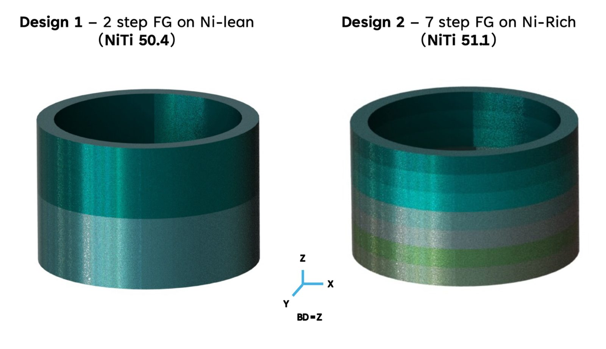
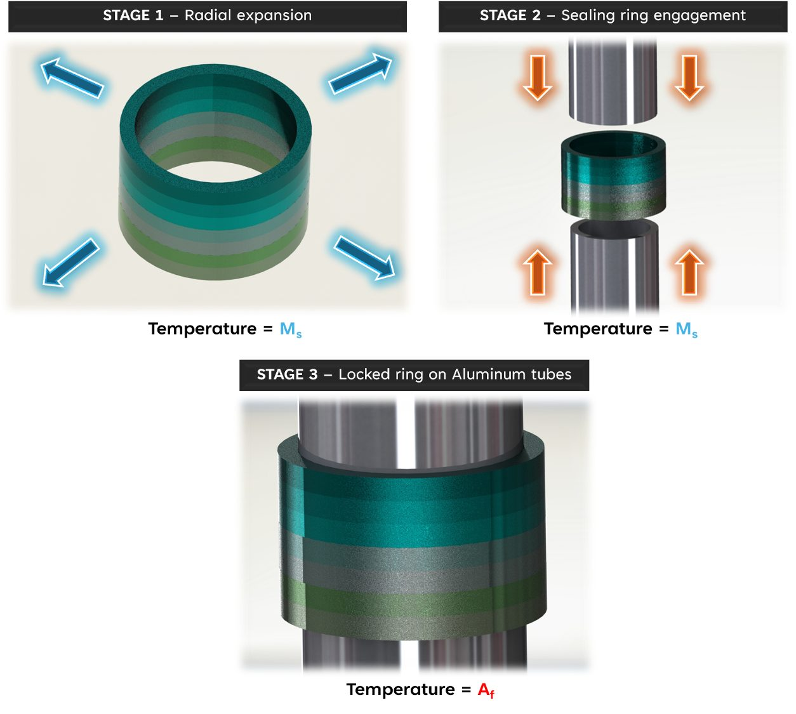

Work / Project 2 of 5
A seal that closes itself
Shape memory sealing rings for radioactive material containment, developed with Los Alamos National Laboratory. The seal load comes from the alloy's recovery stress, not from a bolt.
- Alloy
- Graded NiTi, 50.4 and 51.1
- Partner
- Los Alamos National Laboratory
- Methods
- Design, LPBF, cyclic testing
- My role
- Project lead
- Status
- Submitted to Materials & Design


A sealing ring for radioactive material containment has an unusual requirement. It has to hold for decades, through thermal cycling, without anyone going in to re-torque it. A shape memory ring can be designed to recover against its housing as temperature rises, so the seal load comes from the alloy rather than from a bolt.
The sequence has three stages. Below the martensite start temperature the ring is expanded radially and slipped over the tube ends. As it warms past the austenite finish temperature it recovers inward and locks, and the grip comes from the recovery stress rather than from interference alone. Grading the composition through the ring height lets different parts of the seal engage at different points in that warm-up.
The failure modes worth knowing about show up after the tenth cycle, not the first, so the parts were cycled to see whether recovery force held or decayed. The work was developed with Los Alamos National Laboratory, and the adaptive sealing paper has been submitted to Materials & Design.